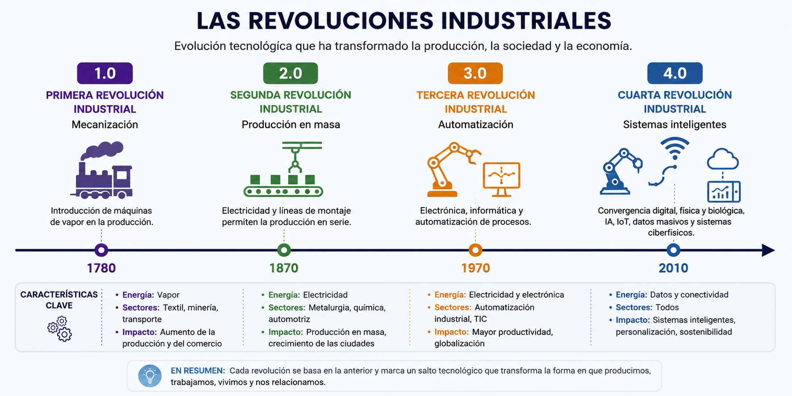
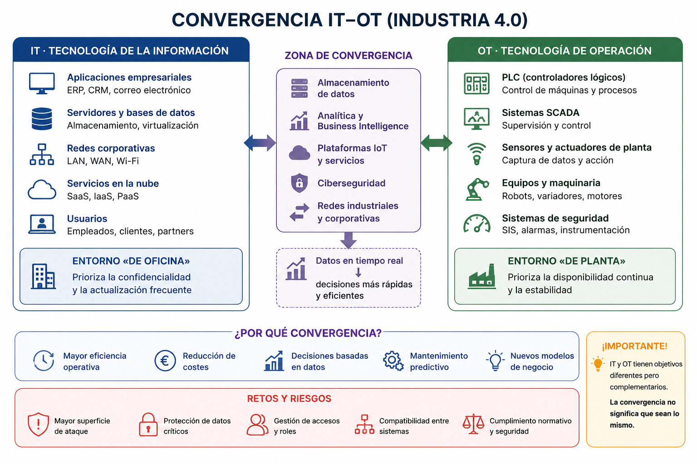
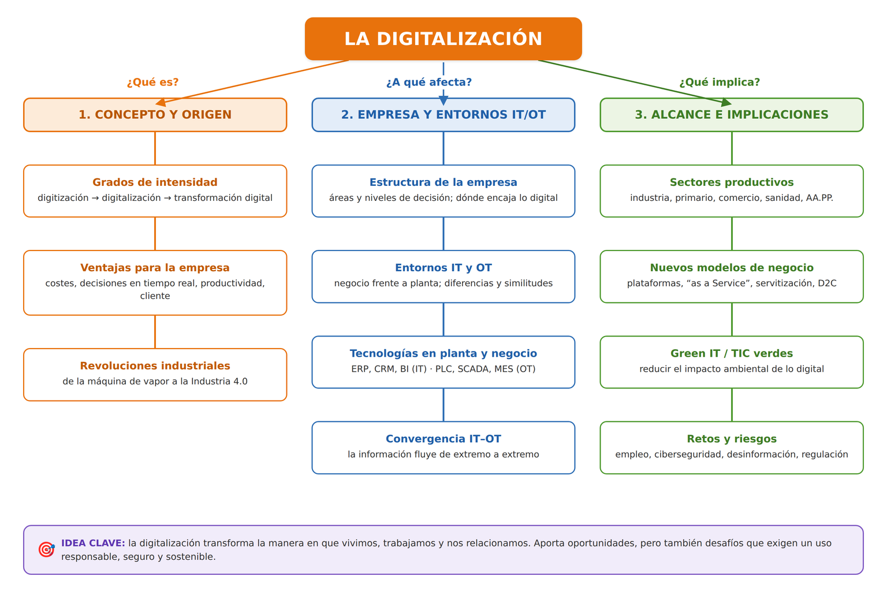

UD1. Digitalización de los sectores productivos¶
Volver al índice de todas las unidades
Resultado de aprendizaje
RA1. Analiza el concepto de digitalización y su repercusión en los sectores productivos teniendo en cuenta la actividad de la empresa e identificando entornos IT (Information Technology, tecnología de la información) y OT (Operational Technology, tecnología de operación) característicos.
1. De la sociedad industrial a la sociedad digital¶
La digitalización es el proceso de incorporar tecnologías digitales a las actividades de una organización, un sector o una sociedad, cambiando no solo las herramientas que se usan, sino también los procesos, los modelos de negocio y la forma de relacionarse con clientes, proveedores y trabajadores.
Conviene distinguir tres conceptos que a menudo se confunden:
| Concepto | Qué implica | Ejemplo |
|---|---|---|
| Digitización | Convertir información analógica en digital (cambia el soporte, no el proceso) | Escanear una factura en papel y guardarla como PDF |
| Digitalización | Usar tecnologías digitales para mejorar procesos existentes | Sustituir el registro en papel por un ERP |
| Transformación digital | Rediseñar el modelo de negocio y la cultura organizativa en torno a lo digital | Una tienda física que pasa a vender también por marketplace, con logística automatizada y atención por chatbot |
La transformación digital no es, por tanto, "comprar ordenadores": es un cambio estructural que afecta a procesos productivos, a la organización del trabajo, a la relación con el cliente y a la propia cultura de la empresa.
Bien planteada, la digitalización aporta a la empresa ventajas claras:
- Reducción de costes y tiempos: se automatizan tareas repetitivas y se eliminan errores y dobles registros.
- Mejores decisiones: la información está disponible en tiempo real y permite anticiparse en lugar de reaccionar.
- Más productividad y calidad: procesos más ágiles y con menos fallos.
- Cercanía al cliente: nuevos canales de venta y atención, y productos o servicios personalizados.
- Flexibilidad para adaptarse a los cambios del mercado.
- Nuevas oportunidades de negocio: modelos digitales que antes no eran posibles (véase apartado 3).
Estas ventajas se materializan plenamente cuando la digitalización abarca toda la empresa, de la gestión a la planta (véase 1.6).
💡 Comprueba que lo has entendido
¿Dónde situarías cada caso?
- Escanear una factura en papel y guardarla como PDF.
- Implantar un ERP para sustituir el registro en papel.
- Crear una plataforma digital que cambia el modelo de negocio.
Ver respuesta
- Digitización — cambia el soporte, no el proceso.
- Digitalización — se mejora con tecnología un proceso que ya existía.
- Transformación digital — se rediseña el modelo de negocio en torno a lo digital.
1.1. Las revoluciones industriales¶
La digitalización actual se entiende como la culminación de un proceso histórico de sucesivas revoluciones industriales:

La cuarta revolución industrial o Industria 4.0 (desde ~2010) no se limita a automatizar: fusiona tecnologías digitales, físicas y biológicas — IoT, big data, inteligencia artificial, robótica avanzada, computación en la nube — para lograr sistemas de producción interconectados y capaces de tomar decisiones de forma autónoma o semiautónoma.
Para situarlo en el tiempo
Si la tercera revolución "informatizó" procesos ya existentes (por ejemplo, sustituir un libro de contabilidad en papel por una hoja de cálculo), la cuarta revolución conecta esos procesos entre sí y con el mundo físico, generando datos en tiempo real que alimentan decisiones automatizadas.
💡 Comprueba que lo has entendido
Una fábrica sustituye sus libros de registro en papel por un sistema informático, pero cada máquina sigue funcionando de forma aislada. Más adelante conecta todas las máquinas y sus sensores para que compartan datos en tiempo real.
¿Con qué revolución industrial se corresponde cada paso?
Ver respuesta
- Informatizar el registro sin conectar los procesos entre sí → tercera revolución industrial.
- Conectar máquinas y sensores para intercambiar datos en tiempo real → cuarta revolución industrial (Industria 4.0).
1.2. La estructura de la empresa y la digitalización¶
Toda empresa se organiza en áreas o departamentos con funciones distintas y en niveles de decisión:
- Nivel estratégico (dirección): fija los objetivos a largo plazo.
- Nivel táctico (mandos intermedios): planifica y coordina cada área.
- Nivel operativo (personal de base): ejecuta las tareas del día a día.
Áreas funcionales habituales: dirección, administración y finanzas, recursos humanos, comercial y marketing, compras, producción u operaciones, calidad, logística, I+D y sistemas/informática.
La implantación de tecnología digital no afecta a todos los departamentos de la misma forma: cada área incorpora herramientas propias.
| Área de la empresa | Tecnología digital característica |
|---|---|
| Dirección | Cuadros de mando, business intelligence (BI) |
| Administración y finanzas | ERP, facturación y firma electrónica |
| Recursos humanos | Portal del empleado, gestión de nóminas y turnos |
| Comercial y marketing | CRM, comercio electrónico, analítica web |
| Compras y logística | ERP, sistema de gestión de almacén (SGA) |
| Producción y mantenimiento | SCADA, MES, sensores, robótica |
Digitalizar en serio implica que estas herramientas se integren entre sí: un dato se introduce una sola vez y fluye por toda la organización. Eso obliga a revisar los procesos y, a veces, el propio organigrama, con perfiles nuevos como el de responsable de transformación digital o analista de datos.
Dentro de esa estructura, unos departamentos trabajan sobre todo con información del negocio y otros actúan sobre el proceso físico. Esa distinción da lugar a los entornos IT y OT.
- Departamentos que suelen constituir el entorno IT: dirección, administración y contabilidad, finanzas, recursos humanos, comercial y marketing, compras y el propio departamento de sistemas/informática.
- Departamentos con fuerte componente OT: producción o fabricación, mantenimiento, control de calidad en planta y logística interna o de almacén.
💡 Comprueba que lo has entendido
Una empresa implanta un CRM en el departamento comercial, un ERP en administración y un sistema SCADA en la planta de fabricación.
¿Qué departamentos está digitalizando y cuáles pertenecen al entorno IT?
Ver respuesta
- Comercial (CRM) y administración (ERP): gestionan información del negocio → entorno IT.
- Producción (SCADA): supervisa y controla el proceso físico → entorno OT.
- La tecnología digital llega a cada área con herramientas distintas; el reto es que el CRM, el ERP y el SCADA compartan datos en lugar de funcionar aislados.
1.3. Entornos IT y OT¶
En cualquier organización industrial conviene distinguir dos entornos tecnológicos que tradicionalmente han evolucionado por separado:
- IT (Information Technology, tecnología de la información): sistemas informáticos dedicados a gestionar la información del negocio — servidores, bases de datos, ERP, CRM, correo electrónico, redes corporativas. Es el entorno "de oficina": factura, planifica, analiza, comunica.
- OT (Operational Technology, tecnología de operación): sistemas que controlan y supervisan procesos físicos y maquinaria — PLC (controladores lógicos programables), sistemas SCADA, sensores y actuadores de planta. Es el entorno "de planta": mueve, mide, actúa sobre el mundo físico.
| IT – Information Technology | OT – Operational Technology | |
|---|---|---|
| ¿Qué gestiona? | Información y sistemas de la empresa | Procesos físicos y máquinas |
| Ejemplos | Servidores, ERP, CRM, bases de datos | PLC, SCADA, sensores, actuadores |
| Entorno | Oficina / negocio | Planta / producción |
| Objetivo principal | Gestionar información | Controlar procesos físicos |
| Prioridad | Confidencialidad e integridad | Disponibilidad y estabilidad |
| Ejemplo | ERP registra un pedido | PLC controla una máquina |
Los departamentos que suelen constituir el entorno IT son administración y contabilidad, finanzas, recursos humanos, comercial y marketing, compras y sistemas/informática; el entorno OT se concentra en producción, mantenimiento, control de calidad en planta y logística interna (véase 1.2).
Pese a sus diferencias, IT y OT también presentan similitudes que explican por qué acaban integrándose:
- Ambos son tecnología que procesa datos y automatiza tareas.
- Ambos se apoyan en hardware, software y redes de comunicación.
- Ambos son críticos: un fallo detiene la actividad, ya sea administrativa o productiva.
- Ambos necesitan ciberseguridad, mantenimiento, actualización y personal cualificado.
- Ambos tienden a usar tecnologías comunes (redes IP, servidores, virtualización, la nube), lo que facilita —y hace casi inevitable— su convergencia.
1.4. Tecnologías de digitalización en planta y en negocio¶
Al digitalizar una empresa se seleccionan tecnologías distintas según se actúe sobre el negocio (entorno IT) o sobre la planta (entorno OT):
| Digitalización del negocio (IT) | Digitalización de la planta (OT) |
|---|---|
| ERP (gestión integrada) | Sensores y actuadores |
| CRM (relación con clientes) | PLC (autómatas programables) |
| BI y cuadros de mando | SCADA (supervisión y control) |
| Facturación y firma electrónica | MES (ejecución de la fabricación) |
| Ofimática y suites colaborativas en la nube | HMI (interfaz con el operario) |
| Comercio electrónico y gestión documental | Redes industriales (Profinet, Modbus, OPC UA) |
| Sistema de gestión de almacén (SGA) | Robótica industrial y colaborativa, visión artificial |
Además, las tecnologías habilitadoras digitales (THD) actúan de puente entre ambos entornos, con mayor peso en uno u otro:
- En el negocio (IT): inteligencia artificial y big data para el análisis de datos, computación en la nube y ciberseguridad.
- En la planta (OT): IoT industrial (IIoT), gemelos digitales, robótica colaborativa, fabricación aditiva y visión artificial.
Todas ellas se estudian en detalle en la UD2.
🏭 Ejemplo
- En negocio: el departamento comercial registra un pedido en el CRM, que lo traslada al ERP.
- En planta: el ERP envía la orden de fabricación al MES, que ajusta los parámetros del PLC de la línea.
- Resultado: un mismo pedido recorre negocio y planta sin que nadie lo reescriba.
1.5. La convergencia entre IT y OT¶
Tradicionalmente IT y OT han funcionado como mundos separados, con redes, protocolos y culturas de trabajo distintas: IT prioriza la confidencialidad y la actualización frecuente; OT prioriza la disponibilidad continua y la estabilidad, evitando cambios que puedan detener una línea de producción. La Industria 4.0 (véase 2.1) se caracteriza precisamente por la convergencia IT-OT: sensores de planta (OT) que envían datos a sistemas de análisis y toma de decisiones de negocio (IT), y decisiones de negocio que repercuten directamente en la configuración de la planta.

Por qué importa la conexión IT-OT
Cuando ambos entornos se conectan, la información fluye sin fricción: un pedido registrado en el ERP (IT) puede ajustar automáticamente los parámetros de una máquina (OT), y un sensor de vibración en esa máquina (OT) puede generar una alerta de mantenimiento visible en el panel de gestión (IT). Esta conexión es la base para digitalizar la empresa "de extremo a extremo" (véase 1.6), pero también multiplica la superficie de exposición a ciberataques, un aspecto que se retoma al hablar de las tecnologías habilitadoras (UD2) y de la nube (UD3).
💡 Comprueba que lo has entendido
Un sensor detecta una temperatura anormal en una máquina y genera una alerta que aparece en el sistema de gestión de mantenimiento.
¿Qué parte pertenece a OT y cuál a IT?
Ver respuesta
- OT: el sensor de temperatura instalado en la máquina y la medición de la variable física en planta. Es tecnología que actúa sobre el mundo físico y supervisa el proceso.
- IT: el sistema de gestión de mantenimiento (GMAO) donde se registra, muestra y consulta la alerta. Es un sistema que gestiona información del negocio.
- El paso de la alerta desde el sensor de planta hasta el sistema de gestión es justamente un ejemplo de convergencia IT-OT: un dato originado en OT alimenta una decisión que se toma y se gestiona en IT.
1.6. Ventajas de digitalizar una empresa de extremo a extremo¶
Digitalizar de extremo a extremo (end-to-end) significa que la información fluye sin cortes a lo largo de toda la cadena de valor —desde el pedido del cliente hasta la entrega y el servicio posventa—, atravesando tanto el negocio (IT) como la planta (OT).
Principales ventajas:
- Acceso y almacenamiento de la información más rápidos: los datos de toda la cadena están disponibles al instante, sin buscarlos en papel ni en aplicaciones aisladas.
- Disponibilidad 24/7: la información y los sistemas son accesibles en cualquier momento, con una producción que puede funcionar de forma continua.
- Reducción de costes: se eliminan tareas manuales, dobles registros y errores de transcripción, y se optimizan inventarios, plazos y consumo de energía.
- Aumento de la productividad: procesos más ágiles, con menos tiempos muertos y menos paradas.
- Trazabilidad y visibilidad completas: se sigue cada pedido, lote o producto en tiempo real a lo largo de todo el proceso.
- Decisiones basadas en datos y en tiempo real: los datos de planta (OT) alimentan la gestión del negocio (IT) y las decisiones de negocio se trasladan a la planta.
- Mejor calidad y mantenimiento predictivo: se anticipan los defectos y las averías, evitando paradas de línea.
- Flexibilidad y mejor servicio al cliente: la producción se adapta con rapidez a la demanda (personalización en masa) y el cliente recibe plazos más fiables e información del estado de su pedido.
Todo ello se traduce en una mejora de la competitividad de la empresa y en una base para innovar con nuevos servicios y modelos de negocio (véase apartado 3).
Como contrapartida, una empresa digitalizada de extremo a extremo amplía su superficie de exposición a ciberataques y aumenta su dependencia tecnológica, riesgos que se abordan en el apartado 5.
💡 Comprueba que lo has entendido
Una fábrica conecta su tienda online, su ERP y sus máquinas de forma que un pedido llega directamente a la línea de producción y el cliente puede consultar en qué fase está su producto.
Indica dos ventajas de esta digitalización de extremo a extremo y un riesgo asociado.
Ver respuesta
- Ventajas (dos cualesquiera): trazabilidad completa del pedido, decisiones en tiempo real, menos errores y costes por eliminar registros manuales, mejor servicio al cliente.
- Riesgo: al conectar tienda, gestión y planta se amplía la superficie de ciberataque; además, un fallo de conectividad puede detener toda la cadena (dependencia tecnológica).
2. La digitalización por sectores productivos¶
Aunque el fenómeno es transversal, cada sector productivo lo incorpora de forma distinta según sus necesidades y su grado de madurez tecnológica.
2.1. Sector industrial: Industria 4.0¶
La industria fue pionera en la digitalización gracias a conceptos como:
- Fábrica inteligente (smart factory): planta de producción donde máquinas, sensores y sistemas de información están interconectados.
- Gemelo digital (digital twin): réplica virtual de un producto, proceso o sistema físico que permite simular su comportamiento antes de actuar sobre el elemento real.
- Mantenimiento predictivo: uso de sensores y análisis de datos para anticipar averías antes de que ocurran, en lugar de esperar a que fallen (mantenimiento correctivo) o revisar por calendario (mantenimiento preventivo).
- Fabricación flexible: líneas de producción reconfigurables que permiten personalizar productos sin perder eficiencia (personalización en masa).
🏭 Ejemplo
- Problema: una máquina puede fallar sin previo aviso.
- Digitalización: sensores + análisis de datos.
- Resultado: mantenimiento predictivo.
2.2. Sector primario: agricultura y ganadería de precisión¶
- Sensores de humedad, temperatura y nutrientes del suelo.
- Drones para monitorización de cultivos y fumigación selectiva.
- Sistemas de riego automatizado basados en datos meteorológicos.
- Trazabilidad digital de alimentos, desde el origen hasta el consumidor.
🏭 Ejemplo
- Problema: no todas las zonas del campo necesitan la misma cantidad de agua.
- Digitalización: sensores de suelo + datos meteorológicos + riego automático.
- Resultado: agricultura de precisión.
2.3. Comercio y logística¶
- Comercio electrónico y marketplaces.
- Omnicanalidad: integración de canales físicos y digitales de venta (comprar online y recoger en tienda, por ejemplo).
- Optimización de rutas de reparto mediante algoritmos.
- Almacenes automatizados y robots de picking.
🏭 Ejemplo
- Problema: el cliente usa varios canales para informarse y comprar.
- Digitalización: tienda física + web + app + logística integrada.
- Resultado: omnicanalidad.
2.4. Sanidad¶
- Historia clínica electrónica y telemedicina.
- Dispositivos wearables de monitorización de constantes vitales.
- Diagnóstico asistido por inteligencia artificial (por ejemplo, análisis de imágenes médicas).
🏭 Ejemplo
- Problema: un paciente crónico necesita seguimiento continuo sin acudir cada día al centro.
- Digitalización: wearables + telemedicina + historia clínica electrónica.
- Resultado: monitorización remota del paciente.
2.5. Educación¶
- Entornos virtuales de aprendizaje (Moodle, Google Classroom).
- Contenidos digitales interactivos y gamificación.
- Analítica del aprendizaje (learning analytics) para personalizar el proceso educativo.
🏭 Ejemplo
- Problema: el alumnado avanza a ritmos distintos y un único material común deja a algunos atrás.
- Digitalización: entorno virtual + contenidos interactivos + analítica del aprendizaje.
- Resultado: aprendizaje personalizado.
2.6. Administración pública¶
- Administración electrónica: sede electrónica, registro electrónico, notificaciones telemáticas, cita previa online.
- Interoperabilidad entre administraciones (no pedir al ciudadano documentos que ya obran en poder de otra administración).
- Identificación digital: DNI electrónico, Cl@ve.
🏭 Ejemplo
- Problema: un trámite obliga a desplazarse, hacer cola y aportar documentos que ya tiene la Administración.
- Digitalización: sede electrónica + identidad digital (Cl@ve) + interoperabilidad entre administraciones.
- Resultado: administración electrónica.
Reto: identifica la digitalización a tu alrededor
Piensa en tres organismos o negocios que utilices habitualmente (tu ayuntamiento, tu centro de salud, una tienda). Para cada uno, identifica un proceso que antes se hacía de forma presencial/en papel y que ahora se realiza total o parcialmente de forma digital. ¿Qué ha ganado el usuario? ¿Qué ha perdido?
3. Nuevos modelos de negocio digitales¶
La digitalización no solo mejora procesos existentes: también hace posibles modelos de negocio que antes no existían.
- Economía de plataformas: empresas que no producen el bien o servicio, sino que conectan oferta y demanda a través de una plataforma digital (aplicaciones de transporte con conductor, plataformas de alojamiento turístico, plataformas de reparto a domicilio).
- Economía colaborativa: intercambio de bienes o servicios entre particulares facilitado por una plataforma digital (coche compartido, alquiler de espacios entre particulares).
- Modelos por suscripción (as a Service): el cliente paga una cuota periódica por el uso de un producto o servicio en lugar de comprarlo (software como servicio, música o vídeo en streaming, incluso "vehículo como servicio").
- Servitización: empresas industriales que añaden servicios digitales a su producto físico (un fabricante de maquinaria que ofrece también mantenimiento predictivo y monitorización remota).
- Comercio electrónico directo al consumidor (D2C): el fabricante vende directamente al consumidor final, prescindiendo de intermediarios tradicionales.
💡 Comprueba que lo has entendido
Un fabricante de compresores industriales deja de vender solo la máquina y pasa a ofrecer un contrato en el que cobra por el aire comprimido suministrado, con monitorización remota y mantenimiento incluido.
¿Qué modelo de negocio digital está adoptando?
Ver respuesta
Servitización: la empresa industrial añade servicios digitales a su producto físico. Además, encaja con un modelo as a Service, porque el cliente paga por el uso (aire comprimido) en lugar de comprar el equipo.
4. Digitalización sostenible (Green IT)¶
La digitalización tiene un impacto ambiental que no siempre es visible:
- Consumo energético de los centros de datos: almacenar y procesar datos en la nube requiere electricidad, refrigeración y, en muchos casos, agua.
- Huella de carbono de los dispositivos: fabricación (extracción de materias primas, minerales críticos), transporte, uso y fin de vida (residuos electrónicos o e-waste).
- Obsolescencia programada y percibida: dispositivos diseñados para durar poco o percibidos como obsoletos aunque sigan siendo funcionales, lo que acelera el reemplazo y el volumen de residuos.
Frente a esto, el concepto de TIC verdes (Green IT) agrupa las prácticas orientadas a reducir este impacto:
- Eficiencia energética en centros de datos (refrigeración eficiente, ubicación en climas fríos, energías renovables).
- Alargar la vida útil de los equipos (reparabilidad, actualización de componentes en lugar de sustitución completa).
- Reciclaje y economía circular de dispositivos electrónicos (recogida selectiva de RAEE — Residuos de Aparatos Eléctricos y Electrónicos).
- Software eficiente: aplicaciones que consumen menos recursos y, por tanto, menos energía.
Reto: calcula tu huella digital
Existen calculadoras online de huella de carbono digital que estiman el impacto de tus dispositivos y de tu consumo de datos (vídeo en streaming, redes sociales, correo electrónico). Usa una de ellas y anota tres hábitos digitales concretos que podrías cambiar para reducir tu impacto.
💡 Comprueba que lo has entendido
Una empresa renueva todos los portátiles cada dos años aunque funcionen bien y conserva de forma indefinida copias de vídeos que nadie consulta en un centro de datos.
Indica dos malas prácticas desde el punto de vista del Green IT y una alternativa para cada una.
Ver respuesta
- Sustituir equipos funcionales cada poco tiempo → alargar su vida útil (reparación, ampliación de componentes en lugar de reemplazo completo).
- Almacenar datos innecesarios de forma indefinida → borrar lo que no se usa; el almacenamiento en la nube consume electricidad, refrigeración y agua.
5. Retos y riesgos de la digitalización¶
No todo son ventajas. Entre los principales retos y riesgos asociados a la digitalización de los sectores productivos destacan:
- Impacto en el empleo: automatización de tareas rutinarias, necesidad de recualificación profesional (reskilling) y actualización continua de competencias (upskilling).
- Dependencia tecnológica: vulnerabilidad ante fallos técnicos, ciberataques o interrupciones del suministro eléctrico o de conectividad.
- Ciberseguridad: la digitalización multiplica la superficie de exposición a amenazas (se estudia en profundidad en la UD3, al hablar de la nube, y de forma transversal en todo el módulo).
- Desinformación: la facilidad para generar y difundir contenido digital (incluido contenido generado por IA) facilita también la propagación de información falsa o manipulada.
- Concentración de poder digital: dependencia de un número reducido de grandes proveedores tecnológicos, lo que plantea cuestiones de soberanía digital (se retoma en la UD3).
- Marco regulatorio: necesidad de adaptar leyes y normas (protección de datos, propiedad intelectual, regulación de la inteligencia artificial) al ritmo del cambio tecnológico.
💡 Comprueba que lo has entendido
Un taller automatiza el diagnóstico de averías con un sistema informático conectado a internet. Un día, un fallo de conexión deja el taller parado varias horas y, además, se detecta que ese sistema es un posible objetivo de ciberataque.
¿Qué dos riesgos de la digitalización se están manifestando?
Ver respuesta
- Dependencia tecnológica: la actividad se detiene ante un fallo de conectividad.
- Ciberseguridad: conectar el sistema a internet amplía la superficie de exposición a amenazas.
Actividades¶
Actividad 1.1 — Mapa de digitalización de un sector
Elige un sector productivo (por ejemplo, hostelería, transporte, construcción o el propio sector TIC) y elabora un breve informe (una página) que incluya:
- Dos problemas o necesidades del sector.
- Qué tecnologías digitales pueden abordarlos.
- El resultado o beneficio esperado.
- Una empresa real del sector que haya llevado a cabo una transformación digital relevante.
- Un riesgo o reto específico asociado a esa digitalización.
Actividad 1.2 — Debate: digitalización y empleo
En grupos, preparad argumentos a favor y en contra de la siguiente afirmación: "La automatización que acompaña a la digitalización destruye más empleo del que crea". Debatid en clase citando ejemplos y datos reales, y relacionad las conclusiones con los retos y riesgos del apartado 5 (impacto en el empleo, recualificación, dependencia tecnológica).
Actividad 1.3 — Mapa IT/OT de una empresa
Elige una empresa industrial (real o inventada) y elabora un pequeño esquema:
- Enumera sus departamentos y clasifícalos en entorno IT o entorno OT.
- Identifica un punto de convergencia: un dato que hoy debería fluir de la planta (OT) a la gestión (IT) o al revés, indicando qué herramienta interviene en cada lado.
- Explica una ventaja concreta de digitalizar esa empresa de extremo a extremo y un riesgo que habría que vigilar.
Mapa conceptual¶

Autoevaluación¶
1. ¿Qué diferencia hay entre digitalización y transformación digital?
La digitalización consiste en aplicar tecnologías digitales a procesos ya existentes para mejorarlos (por ejemplo, sustituir el papel por un documento digital). La transformación digital va más allá: implica repensar el modelo de negocio, la organización y la cultura de la empresa en torno a lo digital.
2. ¿Cómo se relaciona la implantación de tecnología digital con la organización de la empresa?
Cada área o departamento incorpora herramientas digitales propias (BI en dirección, ERP en administración, CRM en el área comercial, SCADA en producción…). La digitalización real exige que esas herramientas se integren entre sí —que el dato se introduzca una vez y fluya— lo que obliga a revisar procesos y, en ocasiones, el propio organigrama, con perfiles nuevos como el de responsable de transformación digital o analista de datos.
3. ¿Qué diferencia hay entre un entorno IT y un entorno OT en una empresa industrial?
El entorno IT (Information Technology) gestiona la información del negocio: servidores, bases de datos, ERP, redes corporativas. El entorno OT (Operational Technology) controla y supervisa procesos físicos y maquinaria: PLC, sistemas SCADA, sensores y actuadores de planta. La Industria 4.0 se caracteriza por la convergencia de ambos entornos.
4. Cita dos similitudes entre los entornos IT y OT.
Por ejemplo: ambos son tecnología que procesa datos y automatiza tareas; ambos se apoyan en hardware, software y redes; ambos son críticos para la actividad; ambos necesitan ciberseguridad y personal cualificado; ambos tienden a usar tecnologías comunes (redes IP, servidores, la nube).
5. Menciona tres ventajas de digitalizar una empresa industrial de extremo a extremo.
Por ejemplo: acceso y almacenamiento de la información más rápidos; disponibilidad 24/7; reducción de costes al eliminar tareas manuales y errores; aumento de la productividad; trazabilidad completa del proceso; decisiones en tiempo real; mantenimiento predictivo; y, como resultado, mejora de la competitividad.
6. ¿Qué es un gemelo digital y para qué se utiliza en la Industria 4.0?
Es una réplica virtual de un producto, proceso o sistema físico que permite simular su comportamiento sin necesidad de actuar sobre el elemento real, anticipando problemas y optimizando decisiones antes de aplicarlas en el mundo físico.
7. ¿Qué significa el término Green IT?
El conjunto de prácticas orientadas a reducir el impacto ambiental de las tecnologías digitales: eficiencia energética de los centros de datos, alargamiento de la vida útil de los dispositivos, reciclaje de residuos electrónicos y desarrollo de software eficiente.
8. Cita dos retos o riesgos asociados a la digitalización de los sectores productivos.
Por ejemplo: el impacto en el empleo y la necesidad de recualificación (reskilling y upskilling); la dependencia tecnológica ante fallos, ciberataques o cortes de suministro; el aumento de la superficie de exposición a amenazas de ciberseguridad; la desinformación; la concentración de poder en unos pocos grandes proveedores; o la necesidad de adaptar el marco regulatorio.